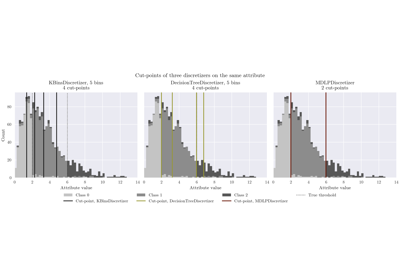

DecisionTreeDiscretizer#
- class skbn.DecisionTreeDiscretizer(n_bins: int = 10, criterion: str = 'entropy', min_samples_leaf: int = 5, fallback: str = 'single', random_state=None)#
Supervised discretizer that uses decision trees to find bin boundaries.
A decision tree is fitted independently for each feature using the target variable
y. The internal split thresholds of each tree are used as cut-points, providing a supervised alternative to equal-width or equal-frequency binning and serving as a practical proxy for MDL-based discretization (Fayyad & Irani, 1993).When a tree finds no beneficial split for a feature, the behaviour is controlled by
fallback:"single"— assign all samples to bin 0 (the supervised criterion found no signal; downstream models see a constant column)."quantile"— fall back to unsupervised equal-frequency binning viaKBinsDiscretizer. Useful when the feature may carry signal through interactions not visible marginally."uniform"— fall back to unsupervised equal-width binning viaKBinsDiscretizer.
Warning
"quantile"and"uniform"mix supervised and unsupervised criteria within the same transformer. This is intentional but should be noted when interpreting feature importances or model explanations.Missing values (
NaN) are imputed with the per-feature median only during tree fitting; the same imputer is reused at transform time so that the binning of missing values is deterministic and consistent.- Parameters:
- n_binsint, default=10
Maximum number of bins (leaves) produced per feature. Must be >= 2.
- criterion{“gini”, “entropy”, “log_loss”}, default=”entropy”
Impurity criterion used to evaluate candidate splits.
"entropy"(equivalent to"log_loss") is the closest analogue to the MDL criterion.- min_samples_leafint or float, default=5
Minimum number of samples required in a leaf node. A float in
(0, 1)is a fraction of the training samples. Increasing this value prevents very fine-grained splits on small datasets.- fallback{“single”, “quantile”, “uniform”}, default=”single”
Strategy for features where the decision tree finds no split.
"single"All samples are assigned to bin 0. The supervised criterion found no marginal signal; the column becomes constant.
"quantile"Fall back to equal-frequency binning using
n_binsbins."uniform"Fall back to equal-width binning using
n_binsbins.
- random_stateint, RandomState instance or None, default=None
Controls the randomness of the decision tree estimator. Pass an int for reproducible results across multiple function calls.
- Attributes:
- n_features_in_int
Number of features seen during
fit().- feature_names_in_ndarray of shape (
n_features_in_,) Names of features seen during
fit(). Defined only whenXhas feature names that are all strings.- thresholds_list of ndarray of shape (n_thresholds_i,)
Sorted split thresholds for each feature
i. An empty array indicates that the tree found no beneficial split; thefallbackstrategy is applied for those features.- imputers_list of SimpleImputer or None
Per-feature imputers fitted on NaN-containing features.
Nonefor features without missing values.- fallback_discretizers_list of KBinsDiscretizer or None
Fitted fallback discretizers for features with no tree split.
Nonefor features that were successfully split by the tree, or whenfallback="single".
Examples
>>> import numpy as np >>> from sklearn.datasets import load_iris >>> X, y = load_iris(return_X_y=True) >>> disc = DecisionTreeDiscretizer(n_bins=5, random_state=0) >>> X_disc = disc.fit_transform(X, y) >>> X_disc.shape (150, 4) >>> disc_qnt = DecisionTreeDiscretizer(n_bins=5, fallback="quantile", random_state=0) >>> X_disc_qnt = disc_qnt.fit_transform(X, y)
Methods
fit(X, y)Fit one decision tree per feature to determine bin boundaries.
fit_transform(X[, y])Fit to data, then transform it.
get_feature_names_out([input_features])Get output feature names for transformation.
Get metadata routing of this object.
get_params([deep])Get parameters for this estimator.
set_output(*[, transform])Set output container.
set_params(**params)Set the parameters of this estimator.
transform(X)Discretize
Xusing the bin boundaries found duringfit().- fit(X, y)#
Fit one decision tree per feature to determine bin boundaries.
- Parameters:
- Xarray-like of shape (n_samples, n_features)
Training data. May contain
NaNvalues.- yarray-like of shape (n_samples,)
Target class labels used to guide supervised splitting.
- Returns:
- selfDecisionTreeDiscretizer
Fitted estimator.
- Raises:
- ValueError
If
n_binsis less than 2 orfallbackis not valid.
- fit_transform(X, y=None, **fit_params)#
Fit to data, then transform it.
Fits transformer to
Xandywith optional parametersfit_paramsand returns a transformed version ofX.- Parameters:
- Xarray-like of shape (n_samples, n_features)
Input samples.
- yarray-like of shape (n_samples,) or (n_samples, n_outputs), default=None
Target values (None for unsupervised transformations).
- **fit_paramsdict
Additional fit parameters. Pass only if the estimator accepts additional params in its
fitmethod.
- Returns:
- X_newndarray array of shape (n_samples, n_features_new)
Transformed array.
- get_feature_names_out(input_features=None)#
Get output feature names for transformation.
- Parameters:
- input_featuresarray-like of str or None, default=None
Input features.
If
input_featuresisNone, thenfeature_names_in_is used as feature names in. Iffeature_names_in_is not defined, then the following input feature names are generated:["x0", "x1", ..., "x(n_features_in_ - 1)"].If
input_featuresis an array-like, theninput_featuresmust matchfeature_names_in_iffeature_names_in_is defined.
- Returns:
- feature_names_outndarray of str objects
Same as input features.
- get_metadata_routing()#
Get metadata routing of this object.
Please check User Guide on how the routing mechanism works.
- Returns:
- routingMetadataRequest
A
MetadataRequestencapsulating routing information.
- get_params(deep=True)#
Get parameters for this estimator.
- Parameters:
- deepbool, default=True
If True, will return the parameters for this estimator and contained subobjects that are estimators.
- Returns:
- paramsdict
Parameter names mapped to their values.
- set_output(*, transform=None)#
Set output container.
See Introducing the set_output API for an example on how to use the API.
- Parameters:
- transform{“default”, “pandas”, “polars”}, default=None
Configure output of
transformandfit_transform."default": Default output format of a transformer"pandas": DataFrame output"polars": Polars outputNone: Transform configuration is unchanged
Added in version 1.4:
"polars"option was added.
- Returns:
- selfestimator instance
Estimator instance.
- set_params(**params)#
Set the parameters of this estimator.
The method works on simple estimators as well as on nested objects (such as
Pipeline). The latter have parameters of the form<component>__<parameter>so that it’s possible to update each component of a nested object.- Parameters:
- **paramsdict
Estimator parameters.
- Returns:
- selfestimator instance
Estimator instance.
- transform(X)#
Discretize
Xusing the bin boundaries found duringfit().Each continuous value is replaced by the integer index of the bin it falls into (0-based).
NaNvalues are first imputed using the per-feature median computed at fit time.- Parameters:
- Xarray-like of shape (n_samples, n_features)
Data to discretize. May contain
NaNvalues.
- Returns:
- X_outndarray of shape (n_samples, n_features)
Discretized array with integer bin indices (stored as float).
- Raises:
- sklearn.exceptions.NotFittedError
If the estimator has not been fitted yet.
- ValueError
If the number of features in
Xdiffers from that seen infit().
Examples using skbn.DecisionTreeDiscretizer#

Supervised discretization: where the cuts fall